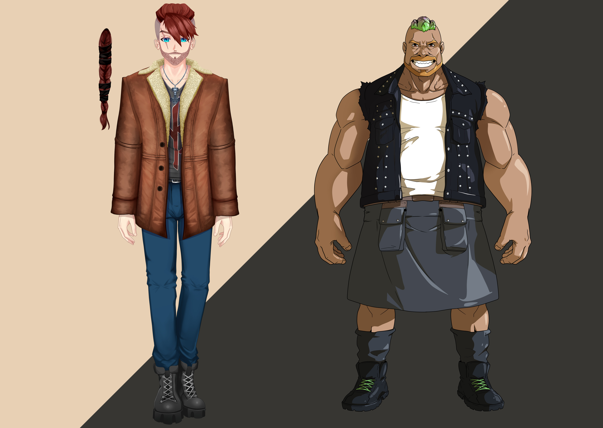
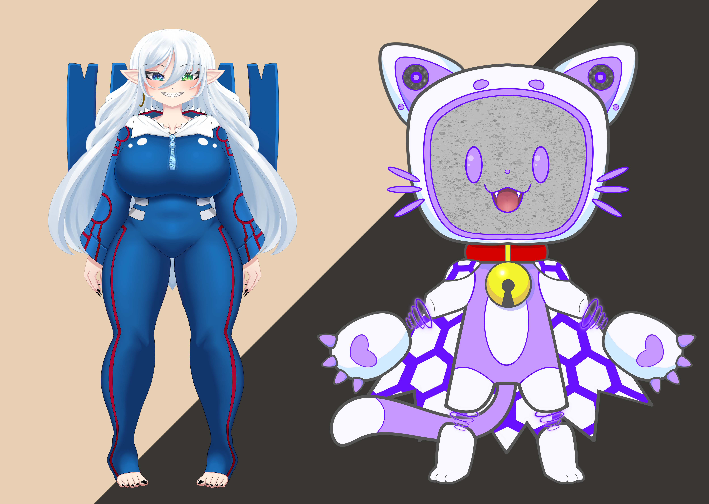
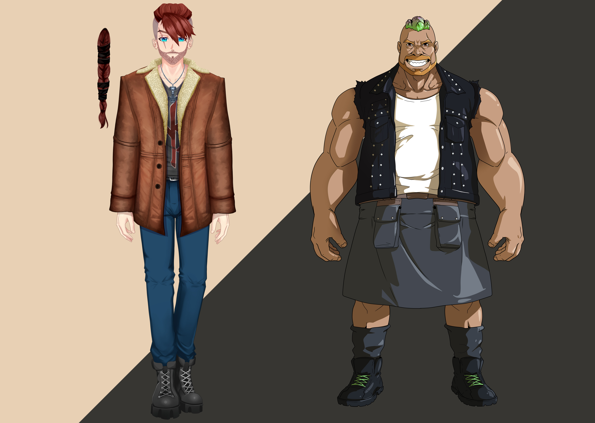
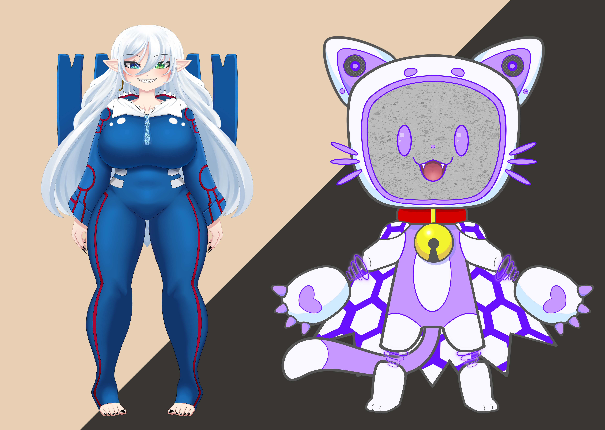

Portafolios - Gabriel Garcia - Hazsu
Diseño de personajes e Ilustración
 



Estilo actual
Mural Jardín de niños Gabriel V. Alcocer
Concept Art Corto Animado "Abismo"
Pitch Corto Animado Abismo
Video Instalacion "El querubin de la sociedad contemporánea"